Game Guide
6. Map
2021-11-10
6. Map
If you get lost while exploring the vast world of Ragnarok Origin, the map can help you find your way!
In this chapter, we will show you where to find the map, how to use it, and all the buttons there.
▣ Map – Basic
Tap the mini-map at the top right to open the map.
When you touch the mini-map, the detailed map will appear like the image below.
The blue arrow on the map is your character’s location and the direction of the arrow is where your character is facing.
The red dots are monsters on the map.
The red whirlpool is the location of a portal, and the name of the destination is written in white.
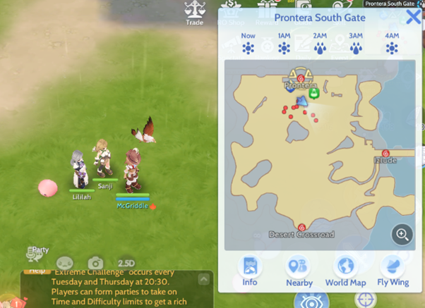
▣ Weather
You can check the weather and time on the upper side of the map.
It shows you the current weather and weather forecasts.
It’s important to check the weather as the map has a variety of changes depending on it.
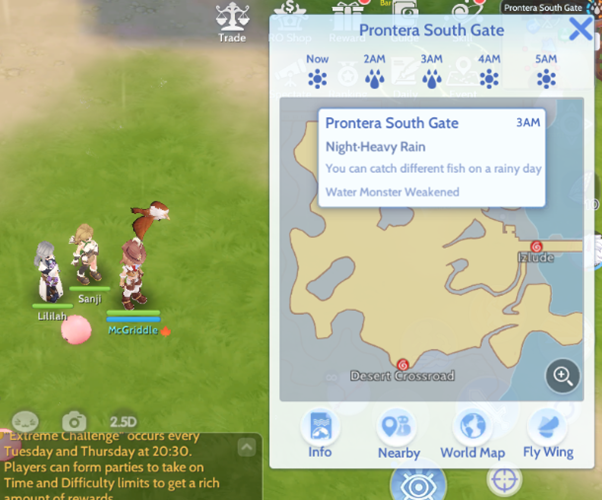
▣ Map Info – NPC
Tap the “Info” icon to see the detailed information on the relevant map.
You can first see the list of NPCs.
NPCs with a question mark (?) means that there’s an available quest to accept.
NPCs with a potion icon refer to an item shop.
NPCs with a sword icon refer to a gear shop.
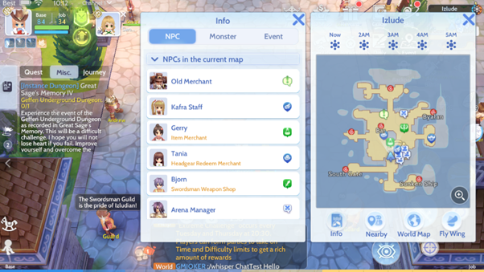
Tapping on an NPC from the list automatically guides your character toward them.
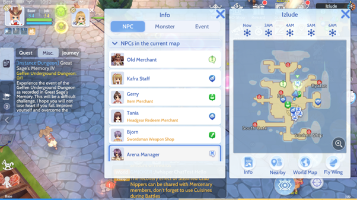
▣ Map Info – Monsters
If you’re on a map with monsters, you would be able to see the relevant information through the monster tab.
You can check the level and other information on the monster and even move toward it by tapping “Go to the monster”.
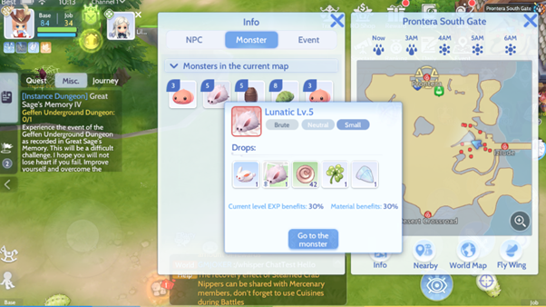
▣ Map Info – Map Events
On the Events tab, you can check for time-based events such as trees bearing fruit after rain.
Check it often, you may just find a surprise!
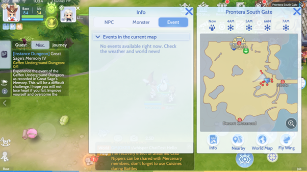
▣ Players Nearby
Tap on the “Nearby” button to see adventurers on the same map.
You can check the adventurers’ information by tapping on their profile. From there you can add them as friends, invite them to your party, etc.

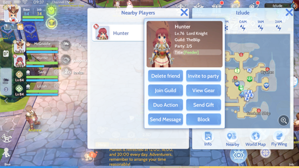
▣ World Map
You can see the world map of Ragnarok Origin by tapping on “World Map”.
The lightened areas are places you have already been, and the darkened areas are places you have not yet explored.
You can use the buttons at the top right to show or hide relevant information.
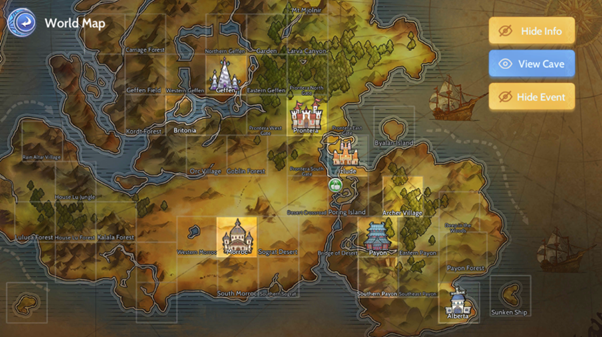
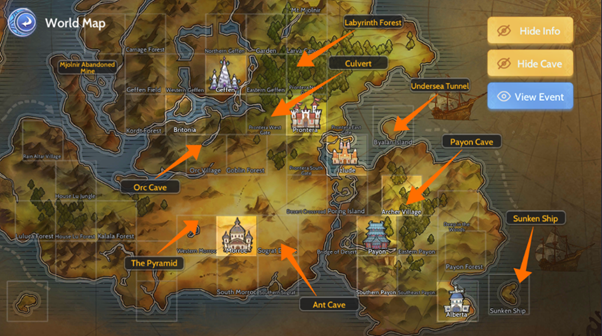
▣ Fly Wing
If you use a Fly Wing, you would be moved to a random location within the map.
It’s recommended to adventurers who enjoy exploring new places.
If you used a Fly Wing at this location…
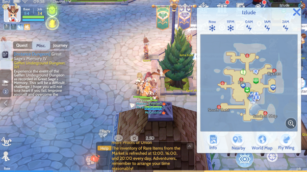
What? Where am I?
You are moved to a random location like this!
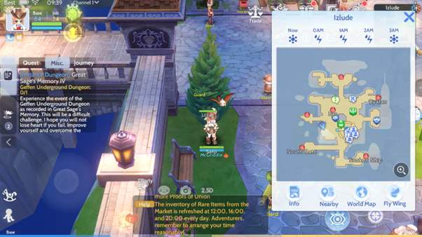
It’s important to study things about the map while you’re on an adventure.
Always remember to pay attention to it!